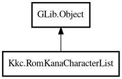

RomKanaCharacterList
Object Hierarchy:

Description:
public class RomKanaCharacterList : Object
A list of RomKanaCharacter
Content:
Properties:
Creation methods:
Methods:
- public void add (RomKanaCharacter character)
Append a character to the character list.
- public void add_all (RomKanaCharacterList other)
Append all characters in other character list to the character list.
- public void insert (int index, RomKanaCharacter character)
Add a character to the character list at the specified position.
- public void insert_all (int index, RomKanaCharacterList other)
Add all characters in other character list to the character list at
the specified position.
- public RomKanaCharacter @get (int index)
Get a character at the given index.
- public void clear ()
Remove all characters from the character list.
- public RomKanaCharacterList slice (int start_char_pos, int stop_char_pos)
Return a slice of this character list.
- public void remove_at (int index)
Remove a character at the given index.
- public string get_output ()
Return the concatenation of all character output as a string.
- public string get_input ()
Return the concatenation of all character input as a string.
Inherited Members:
All known members inherited from class GLib.Object
- interface_find_property
- interface_install_property
- interface_list_properties
- @new
- new_valist
- newv
- new_with_properties
- add_toggle_ref
- add_weak_pointer
- bind_property
- connect
- constructed
- disconnect
- dispose
- dup_data
- dup_qdata
- force_floating
- freeze_notify
- @get
- get_class
- get_data
- get_property
- get_qdata
- get_type
- getv
- is_floating
- notify_property
- @ref
- ref_sink
- replace_data
- replace_qdata
- remove_toggle_ref
- remove_weak_pointer
- @set
- set_data
- set_data_full
- set_property
- set_qdata
- set_qdata_full
- set_valist
- setv
- steal_data
- steal_qdata
- thaw_notify
- unref
- watch_closure
- weak_ref
- weak_unref
- notify
- ref_count